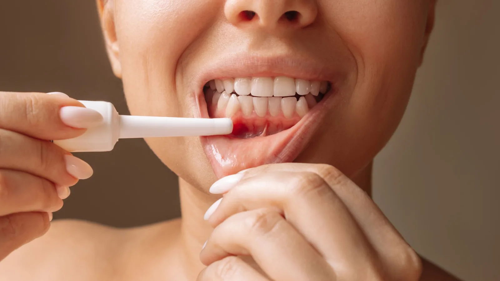

General & Preventive Dentistry
The problem that takes teeth without hurting.
Gum disease is the most common reason adults lose teeth, and it is largely painless until it is advanced. That combination is what makes it dangerous. Plenty of people arrive with teeth that have started to loosen and have never had a day of discomfort.
The early stage, gingivitis, is inflammation of the gum caused by plaque bacteria at the gum line. Gums bleed when brushed, look red rather than pink, and may be puffy. At this stage it is reversible.
Left alone, it can progress to periodontitis, where the inflammation reaches the bone supporting the teeth. Bone that is lost does not grow back. Treatment at that point aims to stop further loss and stabilise what remains, which is why catching it early matters.

Signs worth acting on
- Gums that bleed when you brush or floss
- Persistent bad breath or a bad taste
- Gums that look red, swollen or have receded
- Teeth that feel loose or have started to drift
- Gaps opening up between teeth that were not there before
- Discomfort when biting
Bleeding gums are not normal, and they are not a sign of brushing too hard.
Assessment
Treatment starts with measurement, not guesswork. Dr Meg records the depth of the pocket around each tooth, notes where bleeding occurs, checks for recession and mobility, and takes X-rays to assess bone levels. That gives a baseline to treat against and to compare future visits with.
She will also go through the factors that affect gum health in your case — smoking, diabetes, medications, stress, grinding, and how effective your cleaning at home actually is.
Treatment
For gingivitis, a thorough professional clean combined with genuinely effective home care usually resolves it. The home care component is not optional; it is the larger half of the result.
For periodontitis, treatment involves cleaning below the gum line to remove hardened deposits and bacterial biofilm from the root surfaces, usually under local anaesthetic and often across more than one appointment. A diode laser may be used alongside this as an adjunct in selected cases. Laser is not a substitute for conventional gum therapy and Dr Meg will be straightforward with you about what it adds.
Afterwards you will be reviewed to see how the tissues have responded, and placed on a maintenance interval — often three or four months — because periodontitis is a condition that is managed rather than cured.
Frequently asked questions
No. Healthy gums do not bleed with normal brushing or flossing. Bleeding is a sign of inflammation and is worth having assessed.
Gingivitis can be reversed. Periodontitis can be stabilised and controlled, but bone that has already been lost does not return. The goal is to stop the loss and keep the teeth.
Deeper cleaning is done under local anaesthetic, so the appointment itself is generally comfortable. Gums can be tender for a day or two afterwards and teeth may be temporarily more sensitive to cold.
Recession does not reverse on its own. Treatment stops it progressing. Where recession is causing sensitivity or an aesthetic concern, there are options worth discussing.
As an adjunct to conventional therapy in selected cases, not as a replacement for it. Whether it is appropriate for you is determined at your assessment.
Because bacterial populations below the gum line re-establish within a few months, and once you have had periodontitis the tissue is less forgiving. Shorter intervals are what keep it stable.